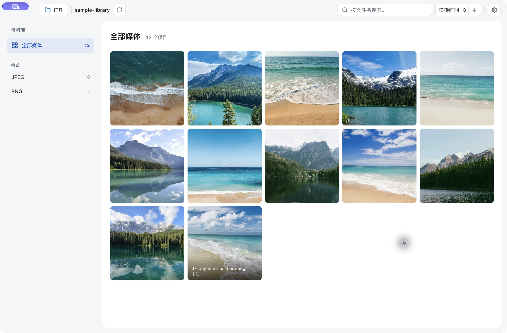
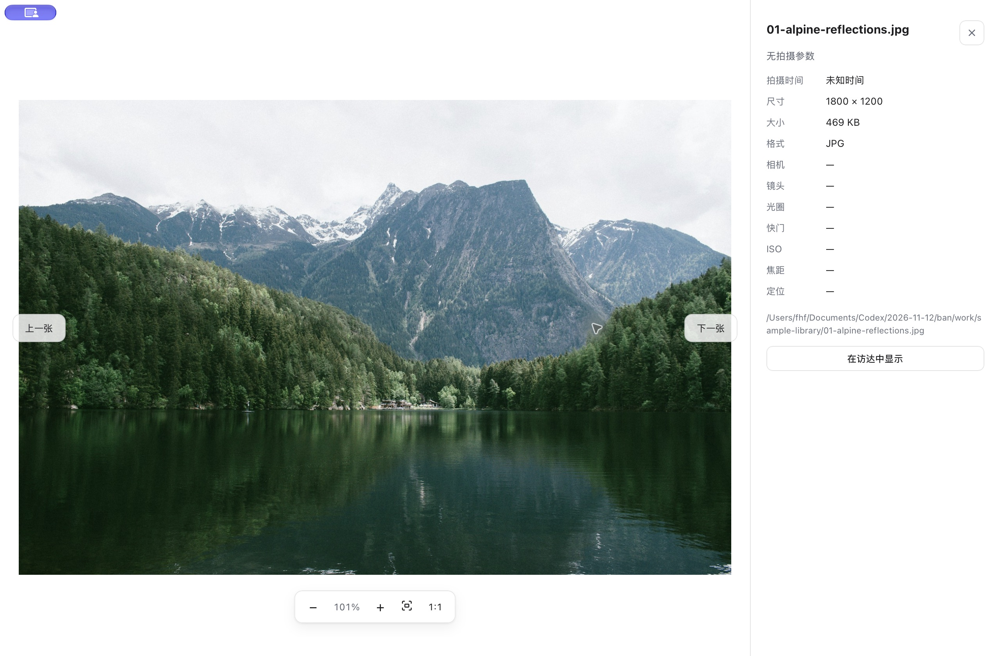

打开文件夹，
就是你的照片馆。
照片和视频，仍在你熟悉的文件夹里。
按时间、相机和格式找回它们，放大看清每一处细节。
免费开源 · Apple Silicon · macOS 11 及以上
当前版本未经 Apple 公证，首次打开可能需要手动放行。安装前先看这一步

从一堆文件，
找到想看的那一张。
不需要迁移照片，也不需要注册账号。选择文件夹后，本机会生成索引与缩略图。
- 按拍摄信息查找
- 按拍摄年份、相机、格式和定位分组，结合文件名搜索；详情里查看镜头、光圈、快门和 ISO。
- 照片与视频一起浏览
- 支持 JPG、PNG、HEIC 等常见图片，以及 MP4、MOV 等视频。视频封面与元数据工具已随安装包提供。
- 放大到原图细节
- 光标锚点缩放、拖动平移与 1:1 实际像素查看。支持独立查看器，也可在访达用“打开方式”直接看图。
- 浏览留在本机
- 解析、索引和预览都在本机完成。重扫仅处理新增或变化的文件；经典浅色、奶油贴纸、石墨深色三种外观可选。
先看全貌，
再看细节。
打开照片后，可以连续浏览同目录内容、查看拍摄参数，或切到实际像素大小检查清晰度。
无需先导入图库。独立查看器里的删除操作会将原文件移到系统废纸篓。

第一次打开，
这里说清楚。
支持 M 系列 Mac（Apple Silicon），macOS 11 及以上。当前没有 Intel、Windows 或 Linux 安装包。
-
下载并放入“应用程序”
下载
下载最新安装包.dmg安装包，打开后将photo-browser.app拖入“应用程序”。不要下载 GitHub 的 Source code 源码压缩包。 -
处理首次打开的系统提示
当前版本尚未完成 Apple Developer ID 签名与公证，系统可能拦截或提示“已损坏，无法打开”。这条提示不能证明文件安全，也不能排除下载损坏。请只从本页链接的官方 GitHub Release 下载；如果系统提供“系统设置 → 隐私与安全性 → 仍要打开”，请先确认来源，再按系统提示操作。
若仍无法打开，优先重新下载并核对 Release 提供的 SHA-256。只有在确认来源与完整性、理解绕过隔离检查的风险后，才考虑执行下方命令，为这个应用副本移除下载隔离标记。
此命令不是安全验证或损坏修复工具，不要对未知来源的软件使用。 它不会完成 Apple 签名或公证；不同 macOS 版本和管理策略下的行为可能不同。
xattr -dr com.apple.quarantine /Applications/photo-browser.app命令仅针对“应用程序”中的这个应用副本。
-
选择文件夹，开始浏览
点击“打开文件夹”，等待首次扫描。照片不会被移动或上传；扫描后可搜索和筛选。后续升级可在应用菜单中使用“检查更新”。
下载前，你可能还想知道
支持哪些格式？可以查看 RAW 吗？
图片支持 JPG、JPEG、PNG、GIF、WebP、BMP、TIFF、HEIC、HEIF 和 AVIF。视频支持 MP4、MOV、M4V、MKV、WebM 等容器，具体播放取决于系统解码能力。暂不支持 CR2、NEF、ARW、DNG 等 RAW 文件。
需要安装 ffmpeg，或者把照片传到云端吗？
正式版安装包已内置 ffmpeg 与 ffprobe，无需另行安装。照片、视频、缩略图和索引都在本机处理；应用更新检查会访问 GitHub。开发环境需要自行准备视频工具。
为什么没有显示某些照片或视频？
先清除搜索与分类筛选，再重新扫描。RAW、损坏文件、无读取权限的目录可能无法处理；不支持的视频编码也可能无法播放。出现扫描提示时，可在应用的“目录”菜单里打开日志目录排查。
它会整理、修改或删除我的原文件吗？
选择目录扫描与普通浏览不会移动或修改原文件。独立查看器提供“移到废纸篓”，仅在你主动使用时执行；索引和缩略图是本机生成的独立数据。
遇到问题，在哪里反馈？
请在 GitHub Issues 留下 macOS 版本、应用版本、文件格式和复现步骤。无需上传私人照片；如需样片，请先移除不愿公开的内容和定位信息。
你的照片，回到你手里。
从一个文件夹开始。